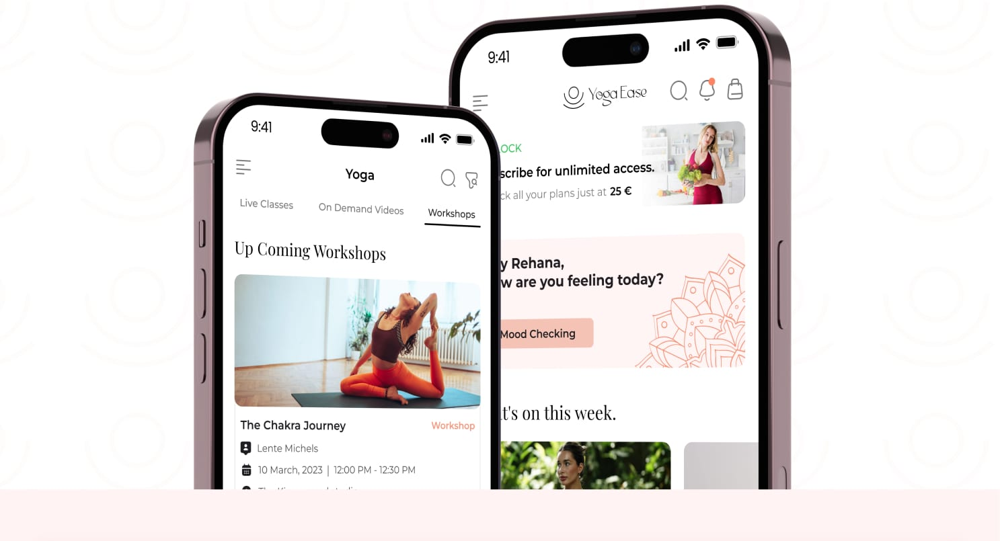
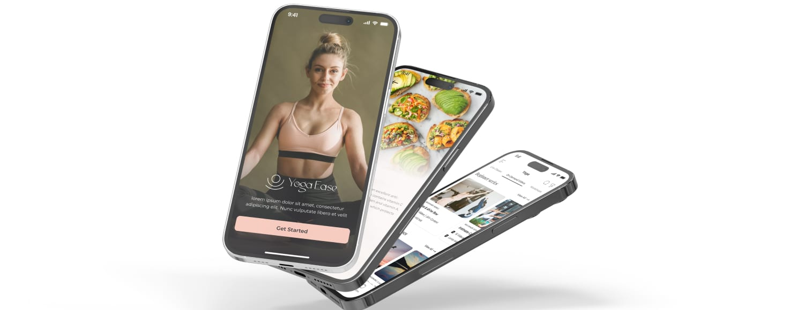
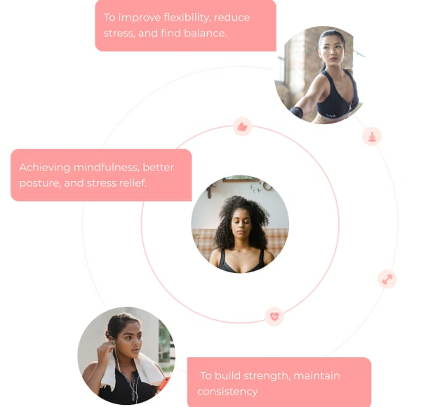
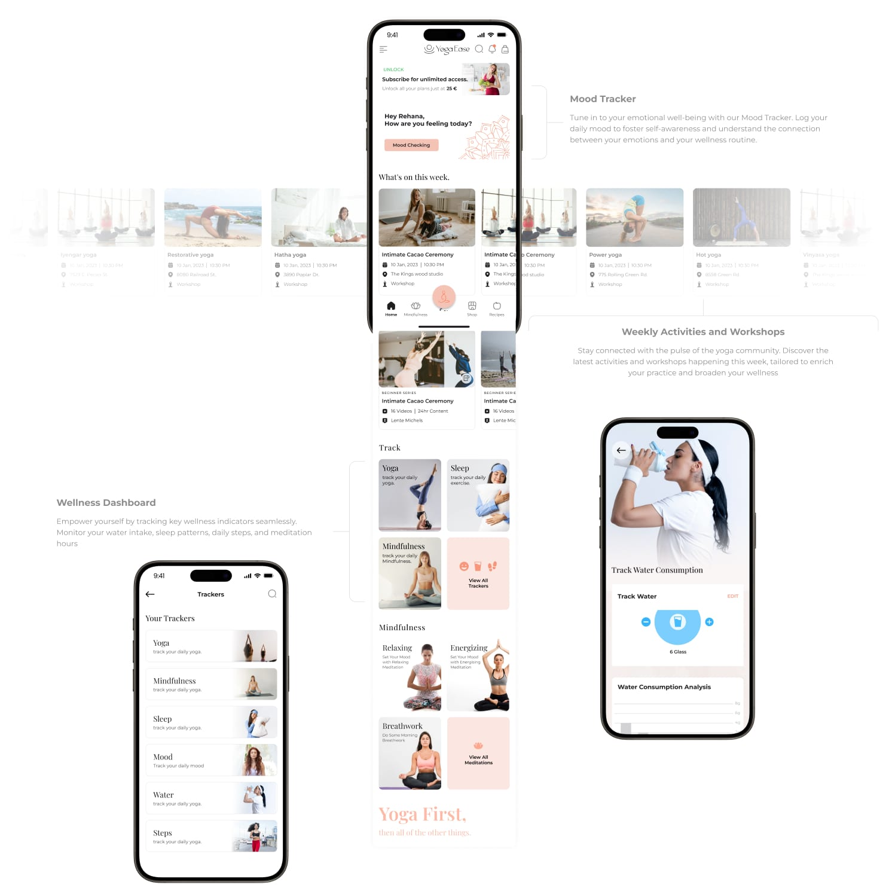
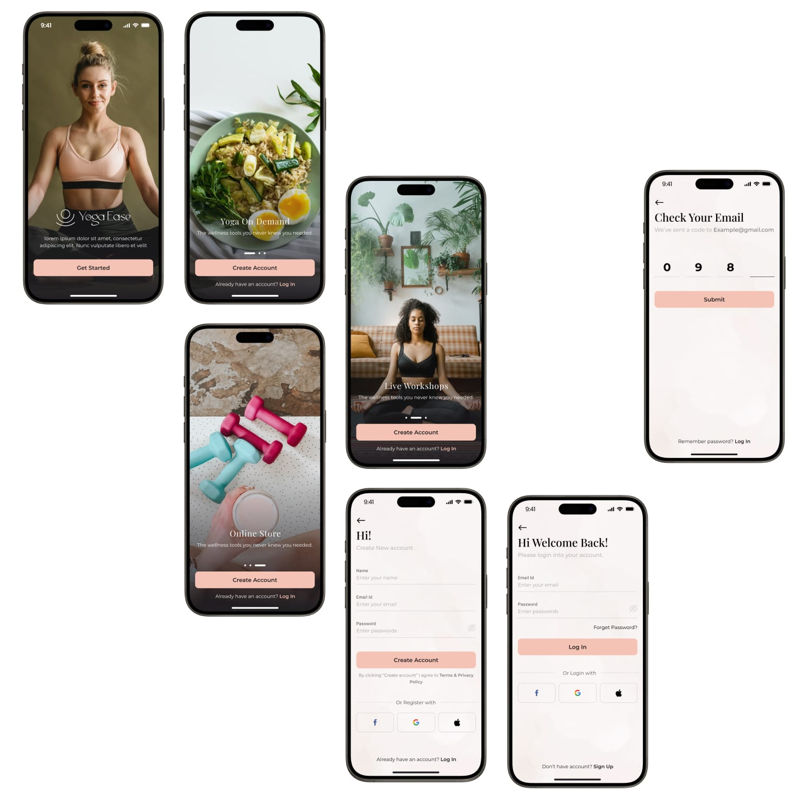

Project Overview
YogaEase brings practice, mindfulness and nutrition into one app
An all-in-one yoga and wellness app that combines guided sessions, mindfulness, diet-based recipes and an integrated store — so the whole routine lives in one place instead of five.

Problem
Wellness was scattered across too many places
From eight user interviews, four pain points came up again and again.
- Not enough time — little room for long sessions, and no easy way to fit practice around work.
- No sense of progress — hard to track a routine, and almost no meditation-focused content.
- Practice and nutrition lived apart — yoga in one app, recipes in another, nothing tying them together.
- Hard to start — beginners felt overwhelmed by complex poses and thin guidance.
Problem
Wellness scattered across five apps — a timetable, a video library, a meditation app, a recipe folder and a shop — with no thread between them.
Solution
One holistic app: short on-demand sessions, a wellness dashboard, recipes in the tab bar and a beginner path — all behind a single account.
Solution
One holistic wellness experience
Five connected areas behind a single account — each answering one of the pain points directly.
- Short, on-demand sessions — five-minute meditations and preloaded videos alongside the live timetable.
- A wellness dashboard — yoga, sleep, mood, water and steps tracked in one place, with a learning list.
- Recipes in the tab bar — diet-based recipes sit next to the practice, not buried in a submenu.
- A beginner path — graded series and a curated library so a first session is easy to find.

Process
Discovery through delivery
Four stages, roughly 80 hours from first interview to handoff.
- 01
Discovery & research
Client goals, idea validation and eight user interviews.
- 02
Structure & flow
Affinity mapping, a persona, and one site map across five areas.
- 03
UX & UI design
Wireframes into 40+ final screens on a calm, consistent design system.
- 04
Refinement & delivery
Prototyping, review and handoff.
Research
Understanding how people practise
Eight interviews, grouped by affinity mapping into a clear set of themes.
- Diverse motivations — from physical fitness to mental well-being, so the app has to flex.
- Discovery is hard — users want personalization and a curated selection, not a bigger catalogue.
- Nutrition belongs with practice — combining the two is a genuine selling point.
- Community and mindfulness — features that keep people coming back.

Services
What the project covered
End-to-end product design, from research to a handoff-ready UI kit.
UX Research
Interviews, affinity and empathy mapping, persona.
Information Architecture
One site map across mindfulness, yoga, home, shop and recipes.
UI Design
Design system, 40+ screens, prototyping and handoff.

Onboarding Screens
A guided first run
Yoga on demand, live workshops and the store — then sign-up, email verification and log in.

Outcome
Five products, one wellness routine
What was five apps to juggle ended as one flow behind a single account.
Delivered to handoff, so the honest measure is the shipped system rather than adoption figures — no post-launch analytics were collected, and none are claimed.
Crafting wellness together
As an Associate UI/UX Designer I worked under the guidance of an experienced Team Lead to bring the app to life.
Rakhi Das — Associate UI/UX Designer
Thank you for reading.
Interested in the thinking behind this project? I'd be glad to walk through it.